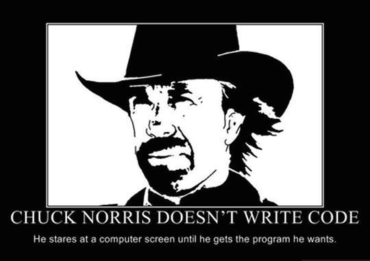

3.1.15 Database concepts
Table of Contents

1 What is a Database
Learn It
- A database is a method of storing data.
- The advantage of a database over another data structure (such as a csv text file) is that the data is quick and easy to sort and search.
- There are many different types of database software that each have their own advantages and disadvantages.
- Databases store data in tables.
Learn It
- Let's take some simple data and see how it would be organised in a database table.
The Way of the Dragon, Colt Lone Wolf McQuade, Ranger J.J. McQuade The Delta Force, Major Scott McCoy The Expendables 2, Booker
- First we'll put it in a
Table- A two dimensional structure used to store data - Each 'cell' in the database table is called a
Field
| The Way of the Dragon | Colt |
| Lone Wolf McQuade | Ranger J.J. McQuade |
| The Delta Force | Major Scott McCoy |
| The Expendables 2 | Booker |
- Although there is some debate on the issue, each row of the table tends to be called a
Record - The table needs a name, so we'll call this one CN-FILMOGRAPHY
- Each
Columnof the table needs a title.
| Film | Role |
|---|---|
| The Way of the Dragon | Colt |
| Lone Wolf McQuade | Ranger J.J. McQuade |
| The Delta Force | Major Scott McCoy |
| The Expendables 2 | Booker |
- To prevent replication of data, make searching easier and to build relationships between tables, each
recordin our table needs a unique identifier. This is called aPrimary Key.
| Film | Role | Key |
|---|---|---|
| The Way of the Dragon | Colt | CN-001 |
| Lone Wolf McQuade | Ranger J.J. McQuade | CN-002 |
| The Delta Force | Major Scott McCoy | CN-003 |
| The Expendables 2 | Booker | CN-004 |
- A
Primary Keymust be unique for eachrecord. No two records can share aPrimary Key. - Normally we'd get the software to generate the
primary keyfor us. We could have used the Film as theprimary keybut it's possible for . two different films to have the same title. It's certainly possible for Chuck Norris to have made more than one film in a year, and he's played the same role in numerous films as well. So theprimary keyis better off being assigned by software to ensure it is unique.
Document It
- For your notes - write down definitions for the following terms
- Table
- Field
- Record
- Primary key
2 Flat File and Relational Databases
Learn It
- We can keep adding data into our table and it would end up being quite large
- This is called a
Flat File Database - Suppose we want more information though. Suppose we want to store data about other aspects of Chuck Norris' films.
- Let's create a new table called FILMS
| Film | Director | Year | Rotten-Tomatoes-Score | Key |
|---|---|---|---|---|
| The Way of the Dragon | Bruce Lee | 1972 | 100 | FM-001 |
| Lone Wolf McQuade | Steve Carver | 1983 | 67 | FM-002 |
| The Delta Force | Menahem Golan | 1986 | 20 | FM-003 |
| The Expendables 2 | Simon West | 2012 | 65 | FM-004 |
- This table has a primary key as well.
- Now that we have our two table, we might want to
Querythe data. Aqueryis basically a question that you ask, getting data from the table back as an answer. - You might want to know "In which year did Chuck Norris play the character Colt?" for instance.
- To answer this question, the tables need to be linked. The simplest way to do this is by using the
Primary Keyfrom the FILMS table as aForeign Keyin the CN-FILMOGRAPHY table.
| Film | Role | Key |
|---|---|---|
| FM-001 | Colt | CN-001 |
| FM-002 | Ranger J.J. McQuade | CN-002 |
| FM-004 | Major Scott McCoy | CN-003 |
| FM-003 | Booker | CN-004 |
- Now when we want to ask "In which year did Chuck Norris play the character Colt?", our database software can look up Colt from the CN-FILMOGRAPHY table in the
columnRole, find the Filmforeign keyin thecolumnfilm and then use this to find the Year from the FILMStable. - We now have a
Relational Databaseas the two tables are linked.
Research It
- You're going to need to know about
indexingin databases. - Use online resources to look up what a Database
indexis and make notes.